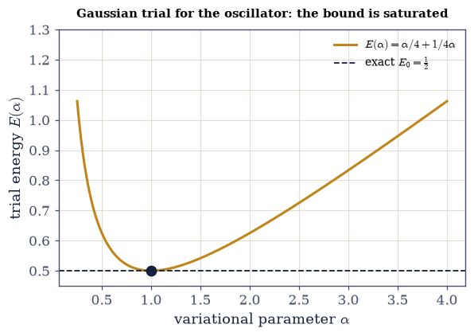
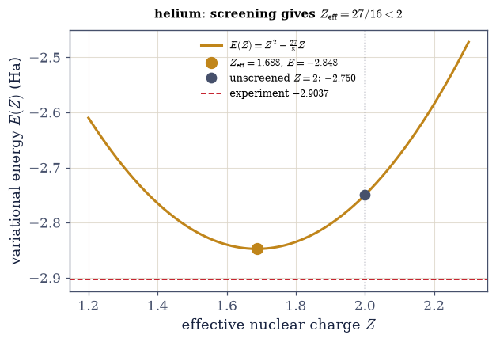
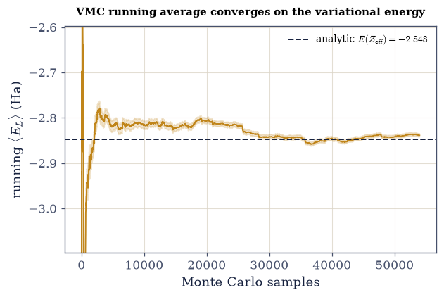
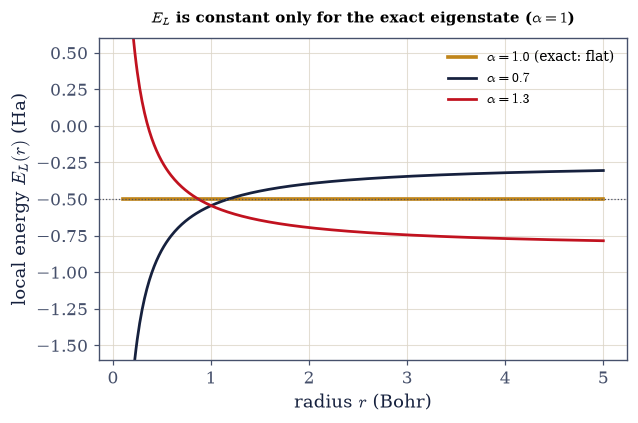
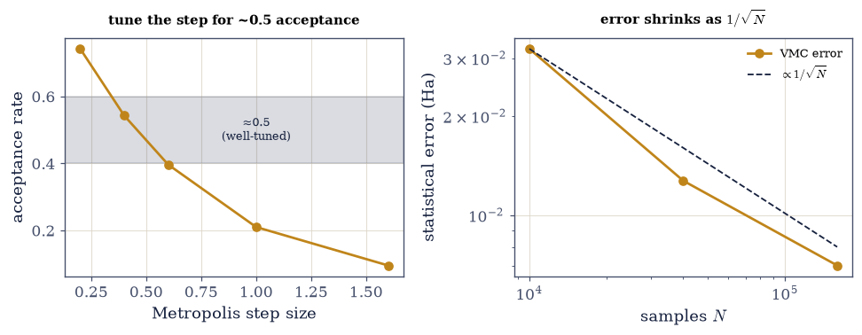

6.22 The Variational Method and Variational Monte Carlo#
Notebook overview#
The last notebook gave us perturbation theory, which works when a problem is close to a solvable one. This notebook gives us its complement — the variational method — which needs no nearby solvable Hamiltonian at all, only a plausible guess at the shape of the ground-state wavefunction. In return it hands us something rare in the business of approximation: a rigorous bound. For any normalized trial state, the energy expectation \(\langle\psi|H|\psi\rangle\) is an upper bound on the true ground-state energy \(E_0\), with equality only when \(\psi\) is the ground state. So we pick a family of trial wavefunctions with adjustable parameters, minimize the energy over them, and know that whatever we get can never dip below the truth — lower is always better.
We build it in three stages. First the warm-ups: a Gaussian trial for the harmonic oscillator and an exponential for hydrogen, where the trial family happens to contain the exact ground state, so the bound is saturated and we recover \(\tfrac12\) and \(-\tfrac12\,\)Ha exactly — a check that the machinery is sound. Then the flagship: the helium atom, where two electrons repel through a \(1/r_{12}\) term that is neither small nor separable and that defeats low-order perturbation theory. A product of two hydrogenic orbitals with an effective nuclear charge \(Z\) as the single variational parameter captures the essential physics — each electron partially screens the nucleus from the other, so the charge each sees is less than \(Z=2\) — and minimizing gives \(Z_{\text{eff}}=27/16\approx1.69\) and an energy of \(-2.85\,\)Ha, remarkably close to the experimental \(-2.90\) and far better than the unscreened guess. One parameter buys the screening that perturbation theory missed.
Finally, when the best trial functions grow too tangled to integrate by hand — a wavefunction with an explicit \(r_{12}\) correlation factor — we evaluate \(\langle H\rangle\) by variational Monte Carlo. We write it as an average of the local energy \(E_L=H\psi/\psi\) over the probability distribution \(|\psi|^2\), sample configurations from \(|\psi|^2\) with the Metropolis algorithm of Volume V (§5.2, §5.8), and average. The mean is the variational energy; its variance measures how far \(\psi\) is from an eigenstate — and vanishes exactly at the true ground state. This zero-variance principle is the conceptual heart of the method and the foundation of modern quantum Monte Carlo, the same sample-a-distribution-and-average-an-estimator logic that runs through computational many-body physics (and, in a different guise, through the sampling behind machine-learned interatomic potentials).
As in every Volume VI notebook, each exercise opens with a crystal-clear statement and enumerated parts, each naming the exact operation — the trial energies via numpy.trapezoid or analytic formulas,
scipy.optimize.minimize_scalar for the parameter optimization, the Metropolis sampler built on
numpy.random.default_rng, and the local energy \(E_L=H\psi/\psi\) coded explicitly.
Conventions and method notes. Atomic units (\(\hbar=m_e=e=4\pi\varepsilon_0=1\)), energies in Hartree (\(1\,\text{Ha}=27.211\,\)eV). Trial forms: Gaussian \(e^{-\alpha x^2/2}\) (oscillator), exponential \(e^{-\alpha r}\) (hydrogen), the product \(e^{-Z(r_1+r_2)}\) and its Jastrow-correlated cousin (helium). The VMC uses single-electron Metropolis moves, a burn-in before averaging, a step tuned for an acceptance near \(0.5\), and a block-averaged error bar (honest about the autocorrelation of Metropolis samples — a naive \(\sigma/\sqrt N\) underestimates it). See Griffiths and Sakurai & Napolitano (the variational principle, helium); Thijssen, Computational Physics, and Foulkes et al. (Rev. Mod. Phys. 2001) for VMC; and Notebooks §6.21 (perturbation theory — the complementary method), §6.17 (hydrogenic orbitals), §6.12 (the oscillator), §5.2/§5.8 (Monte Carlo, the Metropolis algorithm).
Theory in brief#
The variational principle#
For any normalized trial state \(|\psi\rangle\),
with equality iff \(|\psi\rangle\) is the ground state. Proof: expand \(|\psi\rangle=\sum_n c_n|n\rangle\) in the (unknown) energy eigenbasis; then \(\langle H\rangle=\sum_n|c_n|^2 E_n\ge E_0\sum_n|c_n|^2=E_0\), since every \(E_n\ge E_0\). The bound is one-sided — the estimate is always above the truth, so lower is better. (Unnormalized: use \(\langle\psi|H|\psi\rangle/\langle\psi|\psi\rangle\).)
The method, and the warm-ups#
The bound Eq. 613 holds for every trial state, so it holds in particular for the best member of any parametrized family \(\psi_\alpha\), and that observation is already the whole algorithm:
Choose a family \(\psi_\alpha\), compute \(E(\alpha)\), minimize. A Gaussian \(e^{-\alpha x^2/2}\) for the oscillator gives \(E(\alpha)=\alpha/4+1/4\alpha\), minimized at \(\alpha=1\Rightarrow E=\tfrac12=E_0\); an exponential \(e^{-\alpha r}\) for hydrogen gives \(E(\alpha)=\alpha^2/2-\alpha\), minimized at \(\alpha=1 \Rightarrow-\tfrac12\,\)Ha. Both families contain the exact ground state, so the bound is saturated.
Helium and screening#
Helium is the method’s first real test: two electrons bound to a \(Z=2\) nucleus, each repelled by the other. Its Hamiltonian, and the trial energy that a page of hydrogenic integrals produces from it (Griffiths carries them out), are
The \(1/r_{12}\) repulsion is \(\sim37\%\) of the binding — not small, and non-separable. The trial \(\psi=e^{-Z(r_1+r_2)}\) with \(Z\) variational gives \(E(Z)=Z^2-\tfrac{27}{8}Z\) (kinetic \(Z^2\), electron– nucleus \(-4Z\), electron–electron \(+\tfrac58 Z\)), minimized at \(Z_{\text{eff}}=27/16\approx1.69<2\): screening. The energy \(-2.85\,\)Ha beats the unscreened \(Z=2\) value (\(-2.75\)) and nears experiment (\(-2.90\)); the residual gap is correlation, which the Monte Carlo below addresses.
Variational Monte Carlo and the local energy#
When the trial function grows too tangled for closed-form integrals, we evaluate \(\langle H\rangle\) statistically instead. Multiplying and dividing the integrand of \(\int\psi^* H\psi\) by \(\psi\) recasts the expectation value as
an average of the local energy \(E_L\) over \(|\psi|^2\). Sample configurations \(R\) from \(|\psi|^2\) with Metropolis (§5.2/§5.8: propose a move, accept with probability \(\min(1,|\psi_{\text{new}}|^2/ |\psi_{\text{old}}|^2)\)) and average \(E_L\); the statistical error is \(\sim\sigma(E_L)/\sqrt N\). This evaluates trial functions — like one with an explicit \(r_{12}\) Jastrow correlation factor — that have no closed-form integral.
The zero-variance principle#
The local energy is more than a computational device, and one substitution shows why: feed an exact eigenstate into its definition Eq. 616 and the wavefunction cancels,
If \(\psi\) is an exact eigenstate, \(E_L\) is the same everywhere — its variance is zero. So \(\mathrm{Var}(E_L)\) measures how far \(\psi\) is from an eigenstate, and minimizing it optimizes trial functions. This zero-variance principle is the foundation of modern quantum Monte Carlo.
Setup#
Data and instruments only: the series palette, the Hartree conversion and the experimental helium
energy, the three closed-form trial energies \(E(\alpha)\) and \(E(Z)\) that a page of hydrogenic
integrals hands us (Griffiths carries them out — they are the specimens, not the method), the
Jastrow exponent \(u(r_{12})\), and optimize_trial, a bounded wrapper around
scipy.optimize.minimize_scalar. The two objects variational Monte Carlo is are deliberately
absent: you write the helium local energy \(E_L=H\psi/\psi\) and the Metropolis sampler yourself in
Exercise 5, and Exercises 7 and 8 run the sampler you wrote.
The Setup below holds this notebook’s data and instruments — nothing you are asked to build. It is collapsed so the building stays yours; expand it whenever you want the details.
Exercise 1 — The variational principle#
Everything in this notebook rests on one inequality, and the inequality costs two lines of algebra
Eq. 613. Expand a normalized trial state in the (unknown) energy eigenbasis,
\(|\psi\rangle=\sum_n c_n|n\rangle\); then \(\langle H\rangle=\sum_n|c_n|^2E_n\ge E_0\sum_n|c_n|^2=E_0\),
because every \(E_n\ge E_0\). Equality requires all the weight on the ground state. An inequality this
cheap deserves a numerical test, and a small Hermitian matrix is the ideal specimen: its \(E_0\) is the
lowest eigenvalue (numpy.linalg.eigvalsh), so every trial vector can be scored against the truth.
Build a solvable model \(H\) — a random Hermitian \(6\times6\) matrix — and take its exact \(E_0\) from
numpy.linalg.eigvalsh.Draw many random normalized trial vectors and compute \(\langle\psi|H|\psi\rangle/\langle\psi|\psi\rangle\) for each.
Confirm every one is \(\ge E_0\), and that the ground eigenvector attains equality. The estimate is always an upper bound — lower is better.
exact ground-state energy E₀ = -5.2726
of 5000 random trial states, 5000 satisfy ⟨H⟩ ≥ E₀ (100.0%)
the exact ground state attains equality: ⟨H⟩ = -5.2726 = E₀
Validation 1#
✓ the variational principle bounds the ground-state energy from above: ⟨H⟩ ≥ E₀ for every trial state, with equality at the ground state
True
Exercise 2 — Optimizing a trial: the oscillator#
The natural one-parameter family for the harmonic oscillator is the Gaussian
\(\psi_\alpha=e^{-\alpha x^2/2}\), whose width \(\alpha\) is the knob. Doing the two Gaussian integrals
gives the trial energy \(E(\alpha)=\alpha/4+1/4\alpha\) Eq. 614 — Setup’s
variational_energy_oscillator, a specimen handed to us rather than machinery to build. This family
is a lucky one: the exact ground state of the oscillator is a Gaussian, so the family contains
the answer, the bound is saturated, and the minimum should land exactly on \(E_0=\tfrac12\) at
\(\alpha=1\).
Minimize \(E(\alpha)\) over \(\alpha\) with
optimize_trial(boundedscipy.optimize.minimize_scalar).Confirm the minimum is \(E_0=\tfrac12\), attained at \(\alpha=1\).
Report what saturation means here: when the family is right, the bound is exact.
oscillator Gaussian trial e^(−αx²/2): min E(α) = 0.50000 at α = 1.0000
exact ground state E₀ = 0.5 (the trial contains it → bound saturated)
Validation 2#
✓ the Gaussian trial saturates the oscillator ground-state energy (E₀=½ at α=1) [got 0.5 vs expected 0.5 (rtol=1e-06, atol=0.001)]
True

Fig. 573 The variational bound, saturated. The trial energy \(E(\alpha)=\alpha/4+1/4\alpha\) of a Gaussian \(e^{-\alpha x^2/2}\) for the harmonic oscillator, against the width parameter \(\alpha\) (amber). Every point lies on or above the true ground-state energy \(E_0=\tfrac12\) (ink dashed) — the variational principle in action, the curve never dipping below the truth. The minimum (dot) sits exactly on the \(E_0\) line, at \(\alpha=1\): here the trial family contains the exact Gaussian ground state, so the best member is the answer and the bound is saturated. This is the ideal case, and the reassurance that the method is sound before we turn it on a problem — helium — whose trial family does not contain the exact state, where the bound will sit a little above the truth and the gap will measure what our guess left out.#
Exercise 3 — Optimizing a trial: hydrogen#
Hydrogen is a second saturated bound, and the warm-up that matters most: the exponential family
\(\psi_\alpha=e^{-\alpha r}\) is the one that will reappear, doubled, as helium’s product trial. The
hydrogenic integrals give \(E(\alpha)=\alpha^2/2-\alpha\) Eq. 614 — Setup’s
variational_energy_hydrogen, again a given closed form. At \(\alpha=1\) this trial is the exact
\(1s\) orbital of §6.17, so the family contains the ground state and the
minimum must be \(-\tfrac12\,\)Ha exactly.
Minimize \(E(\alpha)\) with
optimize_trial.Confirm the minimum is \(-\tfrac12\,\)Ha, attained at \(\alpha=1\).
Report the optimal \(\alpha\) against the exact \(1s\) decay constant.
hydrogen exponential trial e^(−αr): min E(α) = -0.50000 Ha at α = 1.0000
exact ground state −0.5 Ha (the trial at α=1 is the exact 1s orbital, 6.17)
Validation 3#
✓ the exponential trial saturates the hydrogen ground-state energy (−0.5 Ha at α=1) [got -0.5 vs expected -0.5 (rtol=1e-06, atol=0.001)]
True
Exercise 4 — Helium and screening#
Helium is the method’s first real test. Its Hamiltonian carries a \(1/r_{12}\) repulsion that is
neither small nor separable Eq. 615, and the trial that meets it is the product of two
hydrogenic orbitals, \(\psi=e^{-Z(r_1+r_2)}\), with the nuclear charge \(Z\) demoted to a variational
parameter. A page of hydrogenic integrals (Griffiths carries them out) turns that trial into
\(E(Z)=Z^2-\tfrac{27}{8}Z\) — kinetic \(Z^2\), electron–nucleus \(-4Z\), electron–electron \(+\tfrac58Z\) —
which is Setup’s variational_energy_helium. Two comparisons make the result speak: the
experimental \(-2.9037\,\)Ha, and the unscreened evaluation at the bare \(Z=2\).
Minimize \(E(Z)\) with
optimize_trialand confirm \(Z_{\text{eff}}=27/16\approx1.69\) — less than the bare nuclear charge.Evaluate the energy there, and evaluate the unscreened \(E(2)\) for contrast.
Compare both to experiment and report the residual gap. Each electron screens the nucleus from the other, and one variational parameter finds it.
helium product trial e^(−Z(r₁+r₂)): E(Z) = Z² − (27/8)Z
minimized: Z_eff = 1.68750 (= 27/16 = 1.68750) — LESS than 2: screening
variational energy E = -2.8477 Ha = -77.49 eV
vs experiment -2.9037 Ha, vs unscreened Z=2: -2.7500 Ha
one parameter recovers most of the binding; the residual gap (+0.056 Ha) is correlation
Validation 4#
✓ helium's screened variational energy (Z_eff=27/16, E=−2.85 Ha) is close to experiment and beats the unscreened guess [max|Δ| = 4.375e-05 (rtol=0.001, atol=1e-09)]
True

Fig. 574 Screening solves helium with one parameter. The variational energy \(E(Z)=Z^2-\tfrac{27}{8}Z\) of the helium product trial \(e^{-Z(r_1+r_2)}\), against the effective nuclear charge \(Z\) (amber). The minimum (dot) sits at \(Z_{\text{eff}}=27/16\approx1.69\) — decisively less than the true nuclear charge \(Z=2\) (grey line): each electron screens the nucleus from the other, so the charge each effectively feels is reduced. That screening is the physics low-order perturbation theory cannot see, and here a single variational parameter finds it, landing at \(-2.85\,\)Ha (amber dot) — a long way below the unscreened \(Z=2\) value (\(-2.75\), grey dot) and gratifyingly close to the experimental \(-2.90\,\)Ha (red dashed). The small remaining gap is correlation — the electrons’ instantaneous avoidance, beyond a mean effective charge — which the Monte Carlo of the following exercises captures with an explicit \(r_{12}\) factor.#
Exercise 5 — Variational Monte Carlo: the local energy#
Multiplying and dividing the integrand of \(\int\psi^*H\psi\) by \(\psi\) turns the expectation value into an average of the local energy \(E_L=H\psi/\psi\) over the probability density \(|\psi|^2\) Eq. 616. That single algebraic move is what lets Monte Carlo evaluate a six-dimensional integral by sampling — the sampling spine of Volume V (§5.2, §5.8) turned on wavefunctions. Two objects are needed, and this exercise is where they are written.
The first is the local energy itself. For the helium product trial \(\psi=e^{-Z(r_1+r_2)}\), applying \(H\) and dividing gives \(E_L=-Z^2+(Z-2)(1/r_1+1/r_2)+1/r_{12}\). Multiplying that trial by a Jastrow factor \(e^{u(r_{12})}\) with \(u=\tfrac12 r_{12}/(1+b\,r_{12})\) (Exercise 8’s business) adds a kinetic contribution, which we quote rather than derive: writing \(u'=\tfrac12/(1+b r_{12})^2\) and \(u''=-b/(1+b r_{12})^3\), the extra term is \(-u'^2-u''-2u'/r_{12}+Z\,u'\,(\hat r_1-\hat r_2)\cdot\hat r_{12}\), with \(\hat r_{12}=(\mathbf r_1-\mathbf r_2)/r_{12}\). (It was checked against a finite-difference Laplacian to a part in \(10^7\).)
The second is the sampler. Metropolis on \(|\psi|^2\) never needs the normalization: propose a move of one electron, accept it with probability \(\min(1,|\psi_{\text{new}}|^2/|\psi_{\text{old}}|^2)\), and the chain visits configurations with the right frequency. Work with \(\ln|\psi|\) throughout and accept when \(\ln\xi<2\,\Delta\ln|\psi|\) for a uniform deviate \(\xi\), which keeps the ratio from overflowing and costs one logarithm. Two practicalities matter: a burn-in discarded before averaging, and a block-averaged error bar, because Metropolis samples are correlated and a naive \(\sigma/\sqrt N\) would flatter us. The product trial has a closed-form energy, so this first run can be graded against an answer we already know.
Write
local_energy_helium(r1, r2, Z, b=0.0)for the two electron position 3-vectors, returning the product-trial \(E_L\) above and, whenbis nonzero, adding the quoted Jastrow term. Write this one yourself — the implementation is the lesson.Write
metropolis_vmc(Z, b=0.0, n_steps=120000, step=0.6, burn=8000, n_blocks=80, seed=1): single-electron moves proposed as \(r_i\to r_i+\text{step}\cdot\mathcal N(0,1)\) withnumpy.random.default_rng, the acceptance test above, and after the burn-in an average oflocal_energy_helium. Return the mean, the block-averaged error, the local-energy standard deviation, and the acceptance rate. Write this one yourself — the implementation is the lesson.Run it on the product trial at the \(Z_{\text{eff}}\) of Exercise 4 and confirm the mean matches the analytic \(E(Z_{\text{eff}})=-2.85\,\)Ha, quoting the discrepancy in units of the error bar.
helium VMC (product trial, Z_eff=1.6875), Metropolis sampling of |ψ|²:
VMC energy = -2.8460 ± 0.0113 Ha (analytic -2.8477 Ha)
agreement: 0.1σ; acceptance = 0.40; local-energy spread σ(E_L) = 0.86
the mean local energy reproduces the analytic ⟨H⟩ — Monte Carlo did the 6-D integral by sampling
Validation 5#
✓ VMC reproduces the analytic variational energy of the helium product trial (within a few statistical error bars)
True

Fig. 575 Monte Carlo converges on the integral. The running average of the local energy \(E_L\) as the Metropolis walk accumulates samples (amber), for the helium product trial. It starts noisy and settles onto the analytic variational energy (ink dashed), the shaded band its block-averaged statistical uncertainty \(\sim\sigma(E_L)/\sqrt N\), which narrows only as \(\sqrt N\) — the characteristic slow, honest convergence of Monte Carlo. There is no free lunch: the answer is exact only in the limit of infinite samples, and every finite run carries an error bar. But the pay-off is generality — this same procedure evaluates the expectation of any trial wavefunction, however complicated, including ones (with explicit electron correlation) that no closed-form integral can reach. That is what makes variational Monte Carlo, and its descendants, the workhorse of modern electronic-structure and many-body computation.#
Exercise 6 — The zero-variance principle#
The local energy is more than a computational device, and one substitution shows why: if \(H\psi=E\psi\) then \(E_L=H\psi/\psi=E\) identically, the same number at every configuration, so \(\mathrm{Var}(E_L)=0\) Eq. 617. The variance is therefore a second quality meter, independent of the mean: it measures how far a trial is from being an eigenstate, and it vanishes only at the exact answer. That is the foundation of quantum Monte Carlo — and, in spirit, of sampling-based optimization generally, since a quantity one can drive to a known floor is a quantity one can optimize against. Hydrogen makes the point in one line: for \(\psi_\alpha=e^{-\alpha r}\), applying \(H\) and dividing gives \(E_L=-\alpha^2/2+(\alpha-1)/r\), whose \(r\)-dependence switches off precisely at \(\alpha=1\).
Write
hydrogen_local_energy(r, alpha)returning \(E_L=-\alpha^2/2+(\alpha-1)/r\).Evaluate it on a radial grid at \(\alpha=1\) (the exact ground state) and confirm \(E_L=-\tfrac12\) everywhere — zero spread.
Evaluate it at \(\alpha=0.7\) and \(\alpha=1.3\) and report the spread that appears once the trial is no longer an eigenstate.
hydrogen local energy E_L = −α²/2 + (α−1)/r:
α=1.0: E_L std over r = 0.0000 ← EXACT ground state: E_L constant everywhere (zero variance!)
α=0.7: E_L std over r = 0.3637
α=1.3: E_L std over r = 0.3637
Validation 6#
✓ the local energy is constant at the exact ground state (α=1) — the zero-variance principle [got 0 vs expected 0 (rtol=1e-06, atol=1e-09)]
True

Fig. 576 The zero-variance principle. The hydrogen local energy \(E_L=-\alpha^2/2+(\alpha-1)/r\) as a function of radius, for three exponential trials. At \(\alpha=1\) (amber) the trial is the exact \(1s\) ground state, so \(H\psi=E\psi\) and the local energy is a flat line at \(-\tfrac12\) — the same value at every point, its variance exactly zero. For \(\alpha\ne1\) (ink, red) the trial is not an eigenstate, and \(E_L\) curves and scatters, diverging as \(r\to0\) where the trial mismatches the Coulomb cusp. This is the deepest idea in the method: the spread of the local energy measures precisely how far a trial is from an eigenstate, and it vanishes only at the exact answer. So one can optimize a wavefunction by minimizing not just the mean energy but its variance — and a good trial makes Monte Carlo both accurate and quiet, the principle on which modern quantum Monte Carlo is built.#
Exercise 7 — Practical VMC: tuning and error bars (student)#
A Monte Carlo result is not a number but a number with a texture, and that texture has two knobs Eq. 616. The first is the proposal step: too large and almost every move is rejected, so the chain sits still; too small and every move is accepted but the walk crawls, exploring configuration space at a snail’s pace. The practitioner’s compromise is a step tuned for an acceptance rate near \(\sim0.5\). The second is the sample count, which buys precision only as \(\sqrt N\) — sixteen times the samples for four times the accuracy. Both come with a third habit, the burn-in discarded before averaging, so the chain’s memory of its arbitrary starting configuration does not contaminate the mean.
Run the
metropolis_vmcyou wrote in Exercise 5 at several step sizes and record the acceptance rate at each.Identify the step giving an acceptance near \(\sim0.5\), and confirm the rate falls monotonically through it as the step grows.
At that well-tuned step, run at increasing sample counts and show the error bar shrinks as \(\sim1/\sqrt N\). Step tuning, equilibration, and error bars are features of a stochastic calculation, not bugs.
step-size tuning (acceptance rate vs Metropolis step):
step = 0.2: acceptance = 0.74
step = 0.4: acceptance = 0.54 ← near 0.5 (well-tuned)
step = 0.6: acceptance = 0.40
step = 1.0: acceptance = 0.21
step = 1.6: acceptance = 0.10
error bar shrinks as ~1/√N (at the well-tuned step 0.4):
N = 10000: error = 0.03200 Ha
N = 40000: error = 0.01271 Ha
N = 160000: error = 0.00703 Ha
acceptance decreases through 0.5 (tunable): True; error drops 4.6× for N ×16 (1/√N): True
Validation 7#
✓ practical VMC requires step tuning (acceptance ~0.5), equilibration, and reports a statistical error bar that scales as 1/√N
True

Fig. 577 The honest texture of Monte Carlo. Left: the Metropolis acceptance rate against step size for the helium VMC. Too small a step (left) accepts nearly every move but crawls through configuration space; too large (right) proposes wild moves that are almost always rejected; the sweet spot is a step giving acceptance near \(\tfrac12\) (grey band), which mixes efficiently. Right: the statistical error bar against the number of samples, on log–log axes — a straight line of slope \(-\tfrac12\), the universal \(\sigma/\sqrt N\) of Monte Carlo, so cutting the error in half costs four times the samples. Neither of these is a defect to be hidden: step tuning, a burn-in before averaging, and an error bar that shrinks only as \(\sqrt N\) are the real, teachable texture of every stochastic calculation — the price of being able to integrate in six (or six hundred) dimensions at all.#
Exercise 8 — A Jastrow factor beats the product trial (student / stretch)#
The product trial \(e^{-Z(r_1+r_2)}\) treats the two electrons as independent, each feeling only a mean screened charge; what it cannot represent is their instantaneous avoidance. The standard repair multiplies it by a Jastrow factor \(e^{u(r_{12})}\) with \(u=\tfrac12 r_{12}/(1+b\,r_{12})\), a function that grows with the electron separation and so suppresses configurations where the two come close. No closed-form integral survives this — which is exactly why Monte Carlo was built in Exercise 5, and why the local energy there already carries the \(b>0\) branch. With \(Z=1.85\) and \(b=0.35\) the correlated trial should improve on both meters at once Eq. 616, Eq. 617: a lower energy, still bounded from below by the truth, and a smaller local-energy spread, because the Jastrow removes the electron-coalescence mismatch that made \(E_L\) noisy.
Run the
metropolis_vmcyou wrote in Exercise 5 twice under identical sampling: the product trial at \(Z_{\text{eff}}\) with \(b=0\), and the Jastrow trial at \(Z=1.85\), \(b=0.35\).Show the Jastrow energy is lower than the product trial’s and closer to \(-2.90\,\)Ha, while still lying above it.
Show the local-energy spread \(\sigma(E_L)\) is smaller. Better trials, better bounds — the path modern QMC takes.
helium VMC: product trial vs Jastrow-correlated trial
product (Z=27/16): E = -2.8460 ± 0.0113 Ha, σ(E_L) = 0.86
Jastrow (Z=1.85, b=0.35): E = -2.8832 ± 0.0052 Ha, σ(E_L) = 0.33
experiment = -2.9037 Ha
→ Jastrow LOWER than product (-2.883 < -2.846), toward experiment; and variance REDUCED (0.33 < 0.86)
the r₁₂ factor captures correlation — the electrons' instantaneous avoidance — a product cannot
Validation 8#
✓ explicit correlation improves the variational energy: the Jastrow trial lowers the VMC energy below the product trial toward experiment, with reduced variance
True
Exercise 9 — A guess with a guarantee (synthesis)#
The variational method asks only for a plausible shape and returns something rare in approximation: a rigorous bound, never below the truth, so that lowering the energy always means getting closer. We watched it saturate for the oscillator and hydrogen, where the trial family contained the exact state; then screen the nucleus to solve helium with a single parameter (\(Z_{\text{eff}}=27/16\)) where low-order perturbation theory faltered on the electron–electron repulsion; and finally, when the best trial functions grew too tangled to integrate, we handed the wavefunction to Monte Carlo and averaged the local energy — whose stillness at the exact ground state (the zero-variance principle) is the idea the whole method turns on.
There is no new computation here; the method, and its honesty, are the result. Perturbation theory (§6.21) and the variational method are the two hands of approximate quantum mechanics — one expands around what you can solve, the other guesses the answer and bounds its error. The variational method’s quiet strength is exactly that honesty: it can be wrong, but never optimistically, and Monte Carlo lets the guess be as elaborate as the physics demands. This VMC machinery — Metropolis sampling of \(|\psi|^2\), local-energy averaging, variance as a quality measure — is the foundation of modern electronic-structure and many-body computation, and it is the same sample-and-average logic that underlies stochastic methods far beyond it, from diffusion Monte Carlo to the sampling behind machine-learned interatomic potentials. The next notebook (§6.23) turns to the opposite regime — not a good guess at the wavefunction, but the short-wavelength limit where quantum mechanics shades into the classical action of Volume II: the WKB approximation.
Notebook summary#
The variational method — a guess with a guarantee — and variational Monte Carlo.
The variational principle Eq. 613: \(\langle\psi|H|\psi\rangle\ge E_0\) for any trial (proven by expanding in the eigenbasis) — an upper bound, so lower is better.
Optimizing trials Eq. 614: minimize \(E(\alpha)\) (
scipy.optimize.minimize_scalar); the Gaussian oscillator and exponential hydrogen trials saturate at \(\tfrac12\) and \(-\tfrac12\,\)Ha.Helium and screening Eq. 615: \(E(Z)=Z^2-\tfrac{27}{8}Z\) gives \(Z_{\text{eff}}=27/16<2\) and \(-2.85\,\)Ha — screening captured by one parameter, where perturbation theory struggles.
Variational Monte Carlo Eq. 616: \(\langle H\rangle=\langle E_L\rangle_{|\psi|^2}\) with \(E_L= H\psi/\psi\), by Metropolis sampling (
numpy.random.default_rng, §5.2/§5.8) — reproduces the analytic energy, with block-averaged error bars, tuned steps (\(\sim0.5\) acceptance), and \(1/\sqrt N\) convergence.The zero-variance principle Eq. 617: \(E_L\) is constant at an exact eigenstate; its variance gauges trial quality — the foundation of quantum Monte Carlo. A Jastrow factor lowers helium’s energy toward experiment with reduced variance.
A plausible shape, a rigorous bound, and Monte Carlo to make the guess as rich as the physics needs. Next: the semiclassical limit.
Outlook#
The WKB / semiclassical approximation (§6.23): the short-wavelength limit and the classical action — the connection to the Hamilton–Jacobi theory of Volume II (§2.10).
Time-dependent perturbation theory and Fermi’s golden rule (§6.24): transitions and spectra.
Quantum Monte Carlo beyond VMC: diffusion Monte Carlo, the fermion sign problem, electronic-structure methods (horizons — and a nod to the sampling that powers modern computational materials science).
Correlation and the many-electron problem: Hartree–Fock and beyond (horizons; Volume VII / quantum chemistry).
Cross-reference §6.21 (perturbation theory — the complementary method), §6.17 (hydrogenic orbitals), §6.12 (the oscillator), §5.2/§5.8 (Monte Carlo / Metropolis), and forward to §6.23, §6.24.